토목산업기사 (2003-03-16 기출문제)
1과목: 응용역학
1. 지점 A에서의 수직반력의 크기는?
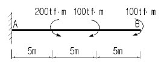
- 0 tf
- 5 tf
- 10 tf
- 20 tf
(정답률: 알수없음)

2. 다음과 같은 부재에 발생할 수 있는 최대 전단응력은?
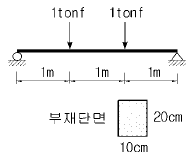
- 7.5 kgf/cm2
- 8.0 kgf/cm2
- 8.5 kgf/cm2
- 9.0 kgf/cm2
(정답률: 알수없음)
3. 3연 모멘트의 사용처로 가장 적당한 곳은?
- 트러스해석
- 연속보해석
- 라멘해석
- 아치해석
(정답률: 알수없음)
4. 다음의 트러스에서 부재력이 0인 것은 몇개 인가?
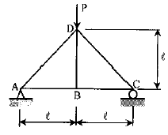
- 없다
- 1개
- 2개
- 3개
(정답률: 알수없음)
5. 다음 단면의 도심
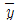
를 구하면?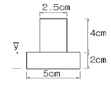
- 2.5 cm
- 2.0 cm
- 1.5 cm
- 1.0 cm
(정답률: 알수없음)
6. 단순보에 등분포 하중이 그림과 같이 작용할 때 최대 처짐량은 얼마인가? (단, EI는 일정)
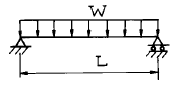
- WL4 / 9EＩ
- WL4 / 48EＩ
- WL4 / 24EＩ
- 5WL4 / 384EＩ
(정답률: 알수없음)
7. 그림과 같은 보의 지점 B 의 반력 RB 는?
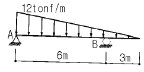
- 18.0 tonf
- 27.0 tonf
- 36.0 tonf
- 40.5 tonf
(정답률: 알수없음)
8. P1, P2가 0(zero)으로 부터 작용하였다. B점의 처짐이 P1으로 인하여 δ1, P2로 인하여 δ2가 생겼다면 P1이 하는 일은?
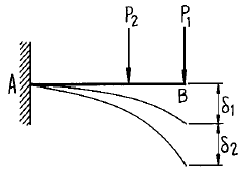
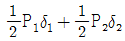
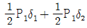
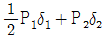
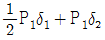
(정답률: 알수없음)
9. 각각 10cm의 폭을 가진 3개 나무토막이 그림과 같이 아교풀로 접착되어 있다. 4500kgf의 하중이 작용할 때 접착부에 생기는 평균 전단응력은?
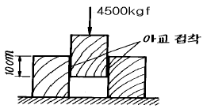
- 20.00 kgf/cm2
- 22.50 kgf/cm2
- 40.25 kgf/cm2
- 45.00 kgf/cm2
(정답률: 알수없음)
10. 그림과 같은 구조물에서 T가 받는 힘의 크기는?
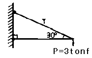
- 6t onf
- 5t onf
- 4t onf
- 3tonf
(정답률: 알수없음)
11. 지름 D, 길이 ℓ 인 원기둥의 세장비는?
- 4ℓ / D
- 8ℓ / D
- 4D / ℓ
- 8D / ℓ
(정답률: 알수없음)
12. 다음 단면에서 y축에 대한 회전반지름은?
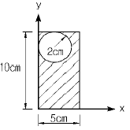
- 2.20 cm
- 2.53 cm
- 2.82 cm
- 3.07 cm
(정답률: 알수없음)
13. 동일한 재료 및 단면을 사용한 다음 기둥 중 좌굴하중이 가장 작은 기둥은?
- 양단 고정의 길이가 2 L인 기둥
- 양단 힌지의 길이가 L인 기둥
- 일단 자유 타단 고정의 길이가 0.5 L인 기둥
- 일단 힌지 타단 고정의 길이가 1.5 L인 기둥
(정답률: 알수없음)
14. 스팬 ℓ 인 양단 고정보의 중앙에 집중하중 P가 작용할 때 고정단의 모멘트의 크기는?
- Pℓ / 2
- Pℓ / 4
- Pℓ / 8
- Pℓ / 16
(정답률: 알수없음)
15. (축과 직각방향의 변형도/축방향의 변형도)를 무엇이라고 하는가?
- 프와송(Poisson)수
- 응력도
- 프와송(Poisson)비
- 탄성(Young)률
(정답률: 알수없음)
16. 그림과 같은 캔틸레버보의 자유단에 단위처짐이 발생하도록 하는데 필요한 등분포하중 w의 크기는? (단, EI는 일정하다.)
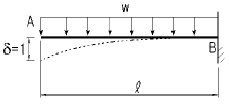
- 6EＩ / ℓ3
- 8EＩ / ℓ4
- 3EＩ / ℓ3
- 12EＩ / ℓ4
(정답률: 알수없음)
17. 그림과 같은 단순보에서 최대 휨응력값은?
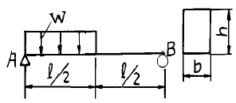
- 3Wℓ2 / 4bh
- 3Wℓ2 / 8bh
- 27Wℓ2 / 32bh2
- 27Wℓ2 / 64bh2
(정답률: 알수없음)
18. 축방향력 N, 단면적 A, 탄성계수 E일 때 축방향 변형에너지는?
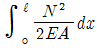
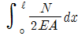
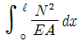
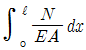
(정답률: 알수없음)
19. 직경 D인 원형 단면보에 휨모멘트 M이 작용할 때 휨응력은?
- 16M / πD3
- 6M / πD3
- 32M / πD3
- 64M / πD3
(정답률: 알수없음)
20. 그림과 같은 트러스에서 꿴 부재의 부재력은?
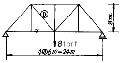
- 10 tonf
- 8 tonf
- 6 tonf
- 5 tonf
(정답률: 알수없음)
2과목: 측량학
21. 직사각형 모양의 토지면적을 1/1,000정확도로 산출할려면 변길이의 측정 정확도는 얼마로 측정해야 하는가?
- 1 / 1,000
- 1 / 2,000
- 1 / 3,000
- 1 / 4,000
(정답률: 알수없음)
22. 클로소이드의 기본식은 A2 = R· L을 사용한다. 이때 매개변수(parameter) A값을 A2으로 쓰는 이유는 무엇인가?
- 클로소이드의 나선형이 2차곡선 형태이기 때문에
- 도로에서의 완화곡선(클로소이드)은 2차원이기 때문에
- 양변의 차원(demension)을 일치시켜야 하기 때문에
- A값의 단위가 2차원이기 때문에
(정답률: 알수없음)
23. 다음은 하천의 유량측정 방법을 설명한 것이다 옳지 못한 것은?
- 유속계를 사용하여 유속을 측정하고 Q = AV로 구한다.
- 부자(浮子)를 사용하여 유속을 측정하여 유량을 구한다.
- 수면구배, 경심 및 조도계수를 알고 유속공식에 의하여 구한다.
- 간접유량 측정법으로 위어(Weir)를 사용한다.
(정답률: 알수없음)
24. 사진측량의 표정에 대한 설명 중 옳지 않은 것은?
- 기계식 상호표정은 ψ2, ψ1, κ2, κ1, ω 표정인자 순으로 진행한다.
- 외부표정은 상호표정, 접합표정, 절대표정으로 나뉜다.
- 상호표정은 궁극적으로 종시차 Py를 소거하는 것을 말한다.
- 절대표정은 지상 좌표계와 일치시키는 과정이다.
(정답률: 20%)
25. 교점(I.P.)의 위치가 기점으로부터 200.12m, 곡률반경 200m, 교각 45° 00′ 인 단곡선의 시단현의 길이는? (단, 측점간 거리는 20m로 한다.)
- 17.28m
- 2.72m
- 17.16m
- 2.84m
(정답률: 알수없음)
26. 삼각측량을 실시하기 위하여 측점 O에 기계를 세우고 각 관측법으로 측량할 경우 관측각의 수는?
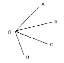
- 3
- 4
- 5
- 6
(정답률: 알수없음)
27. 스타디아측량을 한 결과 협장이 50cm, 고저각 30° 로 수평거리 80m를 얻었다. 이 관측결과에서 시거정수(K)에 0.4의 오차가 포함되어 있다면 이 오차가 거리에 미치는 영향은? (단, K=100 , C=0)
- 10cm
- 15cm
- 20cm
- 25cm
(정답률: 알수없음)
28. 항공사진의 기복변위에 대한 설명중 잘못된 것은?
- 지표면의 기복에 의해 발생한다.
- 기복변위량은 촬영고도에 반비례한다.
- 기복변위량은 초점거리에 비례한다.
- 사진면에서 등각점의 상하방향으로 변위가 발생한다.
(정답률: 알수없음)
29. 중력 측량시 이용되는 수준점은 다음 중 무엇을 기준으로 하는가?
- 비고
- 표고
- 높이
- 고도
(정답률: 알수없음)
30. 각각의 변장거리가 다음 그림과 같을 때 편심이 발생한 0′ 지점에서의 오차보정량은 얼마인가?
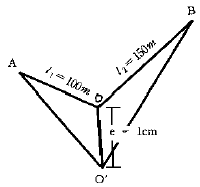
- 24″
- 34″
- 44″
- 54″
(정답률: 알수없음)
31. 평판측량을 할 경우 기지의 A, B 점을 이용하여 미지점 C의 위치를 결정하고자 한다. 이때 기지점 B에 기계를 설치할 수 없어 기지점 A와 미지점 C에 기계를 설치하여 미지점 C의 위치를 결정하는 방법은?
- 전방교회법
- 후방교회법
- 측방교회법
- 시오삼각형법
(정답률: 알수없음)
32. 눈의 높이가 1.6m이고, 빛의 굴절계수가 0.15일 때 해변에서 바라볼 수 있는 수평선까지의 거리는? (단, 지구반경은 6,370km이다.)
- 4.90km
- 5.18km
- 5.32km
- 5.48km
(정답률: 알수없음)
33. 다각측량에서 관측각을 ± 4″ , 거리를 1/10,000의 정도로 관측하였다. 두 관측값에 경중률(輕重率)을 붙인다면 각 의 경중률(輕重率)과 거리의 무게의 비는?
- 1 : 0.2
- 1 : 0.4
- 1 : 0.02
- 1 : 0.04
(정답률: 알수없음)
34. 삼각망중에서 조건식이 가장 많이 생기는 망은?
- 단열삼각망
- 사변형망
- 유심다각망
- 폐합삼각망
(정답률: 알수없음)
35. 다음 완화곡선에 대한 설명 중 잘못된 것은?
- 곡선반경은 완화곡선의 시점에서 무한대이다.
- 완화곡선의 접선은 시점에서 직선에 접한다.
- 종점에 있는 칸트는 원곡선의 칸트와 같다.
- 완화곡선의 길이는 도로폭에 따라 결정된다.
(정답률: 알수없음)
36. 완화곡선의 길이(L)이 캔트와 비례인 경우 완화곡선길이를 구하는 식으로 알맞는 것은? (단, V : 속도, R : 곡률반경, S : 레일간 거리, g : 중력가속도, N : 완화곡선과 캔트와의 비)
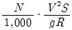
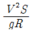
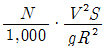
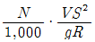
(정답률: 알수없음)
37. 그림과 같이 4점을 측정하였다. 이 때 배면적을 구한값 중 옳은 것은 어느 것인가?
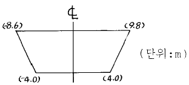
- 87m2
- 100m2
- 174m2
- 192m2
(정답률: 알수없음)
38. 등고선에 대한 설명중 옳지 않은 것은?
- 등경사면에서는 등간격의 평면이 된다.
- 지성선과 등고선은 반드시 직교해야 한다.
- 등고선이 계곡을 지날 때에는 능선을 지날 때 보다 그 곡률반경은 반드시 크다.
- 등고선은 절벽이나 동굴 등 특수한 지형외에는 합치거나 또는 교차하지 않는다.
(정답률: 알수없음)
39. 우리나라 도로기울기의 표시방법은?
- 1/n
- n/10
- n/100
- n/1,000
(정답률: 알수없음)
40. 각관측 과정에서 관측점을 시준할 때 시준오차는 ± 20″, 읽기 오차는 ± 10″ 라고 할 때 한 방향 관측에 따른 각관측 오차는 얼마인가?
- ± 15″
- ± 20″
- ± 22″
- ± 26″
(정답률: 알수없음)
3과목: 수리학
41. 그림과 같이 하안으로부터 10m떨어진 곳에 높이가 1m인 평행한 집수암거를 설치하였다. 투수계수를 0.5㎝/sec로 할 때 이 집수암거 1m당의 집수량은 몇 m3/sec인가? (단, 물은 하천으로부터만 침투하는 것으로 한다.)
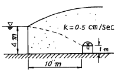
- 2.48 × 10-2/sec
- 3.75 × 10-2/sec
- 2.48 × 10-3/sec
- 3.75 × 10-3/sec
(정답률: 알수없음)
42. 부력의 표시가 잘못된 것은?
- 부력은 고체의 수중부분 부피와 같은 부피의 물 무게와 같다.
- 부체가 배제할 물의 무게와 같은 부력을 받는다.
- 떠 있는 물체는 그 자신의 무게와 같은 만큼 그것이 떠 있는 유체를 배제한다.
- 부력은 수심에 비례하는 압력을 받는다.
(정답률: 알수없음)
43. 강우 강도 I, 침투율 fi, 침투수량 Fi, 토양 미흡량 Md라고 하면 중간 유출과 지하수 유출이 시작되며 수로상 강수와 함께 수문곡선을 그릴수 있는 조건은?
- I ＜ fi, Fi ＜ Md
- I ＜ fi, Fi ＞ Md
- I ＞ fi, Fi ＜ Md
- I ＞ fi, Fi ＞ Md
(정답률: 알수없음)
44. 다음 중 베르누이의 정리를 응용한 것이 아닌 것은?
- Torricelli의 정리
- Pitot tube
- Venturimeter
- Pascal의 원리
(정답률: 10%)
45. 가능최대강수량에 대한 설명중 틀린 것은?
- 정상적인 조건하에서 발생가능한 최대강수량을 말한다.
- 유역면적에 따라 그 크기가 달라진다.
- 강우지속기간에 따라 그 크기가 달라진다.
- 과거 발생호우의 극치를 사용한 통계학적 방법에 의해 추정하는 것이 보통이다.
(정답률: 알수없음)
46. 안지름 200㎜의 관에 대한 조도계수 n = 0.012이다. 마찰손실 계수는?
- 0.0255
- 0.0306
- 0.0410
- 0.0442
(정답률: 알수없음)
47. 지하수에서 Darcy의 법칙에 관계 없는 것은?
- 지하수의 유속은 동수경사에 반비례한다.
- Darcy의 법칙에서 투수계수의 차원은 [LT-1]다.
- Q = Ak(△h/ℓ)의 유량공식이 성립한다.
- Darcy의 법칙은 주로 층류로 취급했으며 레이놀즈 수는 Re ＜ 4의 적용범위로 했다.
(정답률: 알수없음)
48. 다음 중 수문곡선(hydrograph)이 아닌 것은?
- 누가 유량 곡선
- 수위 - 유량 곡선
- 시간 - 유량 곡선
- 시간 - 수위 곡선
(정답률: 알수없음)
49. 개수로에서 수심 h = 1.2m이고,평균유속 V = 4.54m/sec인 흐름의 비에너지(Specific energy)는? (단, α = 1이다.)
- 1.25m
- 2.25m
- 2.75m
- 3.25m
(정답률: 알수없음)
50. 그림과 같은 수압계눈금의 읽음이 그림과 같을 경우 수압강도 P를 계산하면?
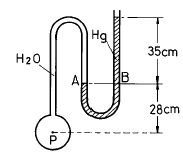
- P = 504g/㎝2
- P = 476g/㎝2
- P = 28g/㎝2
- P = 448g/㎝2
(정답률: 알수없음)
51. 폭이 10m인 구형 수로에 유속 3m/sec로 30m3/sec의 물이 흐른다. 이때 비에너지와 한계수심은 각각 얼마인가?
- 비에너지 : 1.459m, 한계수심 : 0.092m
- 비에너지 : 2.459m, 한계수심 : 1.972m
- 비에너지 : 3.459m, 한계수심 : 2.972m
- 비에너지 : 1.495m, 한계수심 : 0.972m
(정답률: 알수없음)
52. 우리나라 수자원의 특성이 아닌 것은?
- 6, 7, 8, 9월에 강우가 집중된다.
- 강우의 하천유출량은 홍수시에 집중된다.
- 하천경사가 급한 곳이 많다.
- 하상계수가 낮은 편에 속한다.
(정답률: 알수없음)
53. 수두가 2m인 작은 오리피스(orifice)로 부터 유출하는 유량은? (단, 오리피스의 직경은 10㎝, 유속계수 0.95, 수축계수 0.8이다.)
- 0.⑤3m3/sec
- 0.012m3/sec
- 0.132m3/sec
- 0.037m3/sec
(정답률: 알수없음)
54. 평행하게 놓여져 있는 관로에서 A점의 유속이 1m/sec, 압력이 5㎏/㎝2이고, B점의 유속이 2m/sec이라면 B점의 압력은?
- 4.85t/m2
- 4.98t/m2
- 48.50t/m2
- 49.85t/m2
(정답률: 알수없음)
55. 상온에 있는 물의 성질 중 틀린 것은?
- 온도가 증가하면 동점성계수는 감소한다.
- 온도가 증가하면 점성계수는 감소한다.
- 온도가 증가하면 표면장력은 증가한다.
- 온도가 증가하면 체적탄성계수는 증가한다.
(정답률: 알수없음)
56. 물에 대한 성질을 설명한 것으로 옳지 않은 것은?
- 점성계수는 수온이 높을수록 작아진다.
- 동점성계수는 수온에 따라 변하며 온도가 낮을수록 그 값은 크다.
- 물은 일정한 체적을 갖고 있으나 온도와 압력의 변화에 따라 어느 정도 팽창 또는 수축을 한다.
- 물의 단위중량은 0℃에서 최대이고 밀도는 4℃에서 최대이다.
(정답률: 알수없음)
57. 다음 그림에 표시된 위치에서 부체가 안정상태인 것은? (단, M : 경심, C : 부심, G : 무게중심이고 기호 표시는 위로부터의 순서를 말한다.)
- G - M - C
- M - G - C
- C - M - G
- G - C - M
(정답률: 알수없음)
58. 수조1과 수조2를 단면적(A)의 완전한 수중오리피스 2개로 연결하였다. 수조1로부터 상시 유량의 물을 수조2로 송수할 때 양수조의 수면차(H)는? (단, 오리피스의 유량계수는 C 이고, 접근유속수두(ha)는 무시한다.)
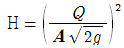
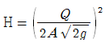
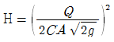
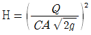
(정답률: 알수없음)
59. 구형수로에서 수리상 유리한 단면(hydraulic best section)은? (단, 구형수로의 폭은 b, 수심은 h, 단면적은 A 이다.)
- h = 2b
- h = b
- h = √(A/2)
- h = b1/2
(정답률: 알수없음)
60. 그림과 같은 유관(流管)에 물이 흐르고 있다. 단면Ⅰ에서의 유속이 1.5m/sec일 경우, 단면Ⅱ에서의 유속은? (단, 단면Ⅰ의 관지름 3.0m, 단면Ⅱ의 관지름 1.5m이다.)
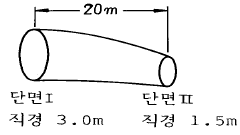
- 3.5m/sec
- 6.0m/sec
- 3.0m/sec
- 5.5m/sec
(정답률: 알수없음)
4과목: 철근콘크리트 및 강구조
61. 이론상 전단철근이 필요없지만 최소 전단철근량 Av = 3.5 (bw · s / fy)를 배치하도록 규정하고 있다. 계수전단력 Vu의 범위가 맞는 것은? (단, 강도설계법이고, Vc는 콘크리트가 부담하는 전단강도)
- Vu ≤ Vc
- Vu ≤ φVc
- (1/2)φVc ＜ Vu ≤ φVc
- (1/2)Vc ＜ Vu ≤ Vc
(정답률: 알수없음)
62. 그림과 같은 이음에서 리벳의 강도는 얼마인가? (단, 리벳지름 d = 22 mm, τa=1,000 kgf/cm2, σba =2,500 kgf/cm2)
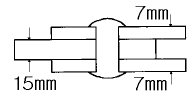
- 7,258 kgf
- 7,603 kgf
- 7,700 kgf
- 7,925 kgf
(정답률: 알수없음)
63. 강도설계법에서 보에 대한 등가깊이 a = β1C인데 fck가 450㎏/㎝2일 경우 β1의 값은?
- 0.85
- 0.73
- 0.65
- 0.63
(정답률: 알수없음)
64. 인장 이형 철근의 기본정착길이는 얼마인가? (단, 철근의 공칭지름 db = 2.54cm, fck = 270kgf/cm2, fy = 4000 kgf/cm2이다.)
- 75 cm
- 86 cm
- 94 cm
- 1⑤ cm
(정답률: 알수없음)
65. 다음 그림과 같은 PSC 단순보에 프리스트레스 힘을 400tonf 작용했을 때 프리스트레스에 의한 상향력은?
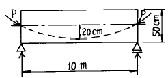
- 4tonf/m
- 6.4tonf/m
- 8tonf/m
- 40tonf/m
(정답률: 알수없음)
66. b = 30cm, d = 60cm인 단철근 직사각형보에서 유효하게 사용할 수 있는 최대 철근량은? (단, 균형 철근비 ρb = 0.0207 이고 강도 설계법임)
- 38.26 cm2
- 37.26 cm2
- 28.95 cm2
- 27.95 cm2
(정답률: 알수없음)
67. 리벳의 값을 결정하는 방법중 옳은 것은?
- 허용전단력과 허용압축력으로 각각 결정한다.
- 허용전단력과 허용지압력중 큰 것으로 한다.
- 허용전단력과 허용압축력의 평균치로 결정한다.
- 허용전단력과 허용지압력중 작은 것으로 한다.
(정답률: 알수없음)
68. 철근콘크리트 구조물의 강도설계법에서 사용되는 하중계수에 대한 다음 설명 중 잘못된 것은?
- 하중계수는 항상 1보다 크다.
- 일반적인 경우 고정하중(D)에 대한 하중계수는 1.4이지만 지하구조물에서와 같이 고정하중이 지배적인 구조물의 고정하중에 대한 하중계수는 1.54이다.
- 일반적인 경우 활하중(L)에 대한 하중계수는 1.7이다.
- 설계기준에 제시된 하중계수와 하중조합을 모두 고려하여 해당 구조물에 작용하는 최대 소요강도에 대하여 만족하도록 설계하여야 한다.
(정답률: 알수없음)
69. 압축 부재의 설계시 고려해야 할 사항으로 옳지 않은 것은?
- 띠철근 압축 부재의 단면 최소 치수는 20 cm이고, 그 단면적은 600 cm2 이상이어야 한다.
- 나선철근 압축 부재 단면의 심부 지름은 10 cm 이상이어야 한다.
- 나선철근의 항복 강도는 4,000 kgf/cm2 이하이어야 한다.
- 축방향 부재의 주철근의 최소개수는 나선철근으로 둘러싸인 철근의 경우 6개이다.
(정답률: 알수없음)
70. 앞부벽식 옹벽은 부벽을 어떤보로 설계하는가?
- T형보
- 연속보
- 단순보
- 직사각형보
(정답률: 알수없음)
71. PSC에서 프리텐션 방식의 장점이 아닌 것은?
- PS 강재를 곡선으로 배치하기 쉽다.
- 정착장치가 필요하지 않다.
- 제품의 품질에 대한 신뢰도가 높다.
- 대량 제조가 가능하다.
(정답률: 알수없음)
72. 그림과 같은 용접길이의 유효길이는 얼마인가?
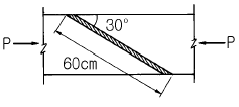
- 60 cm
- 52 cm
- 40 cm
- 30 cm
(정답률: 알수없음)
73. 시간과 더불어 진행되는 장기처짐은 탄성처짐에 λ 계수를 곱하여 사용한다. 이 때 λ 의 값으로 옳은 것은? (단, ξ 는 지속하중의 재하기간에 따른 계수이고, ρ '는 압축철근비를 의미한다.)
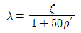
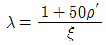
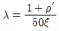
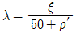
(정답률: 알수없음)
74. 보강재에 대한 설명 중 옳지 않은 것은?
- 보강재는 복부판의 전단력에 따른 좌굴을 방지하는 역할을 한다.
- 보강재는 단보강재, 중간보강재, 수평보강재가 있다.
- 수평보강재는 복부판이 두꺼운 경우에 주로 사용된다.
- 보강재는 지점 등의 이음부분에 설치한다.
(정답률: 알수없음)
75. 철근 concrete보에서 스터럽을 배근하는 이유는?
- 보에 작용하는 사인장응력에 의한 균열을 방지하기 위하여
- 주철근 상호의 위치를 정확하게 확보하기 위하여
- 콘크리트의 부착을 좋게 하기 위하여
- 압축을 받는쪽에 좌굴을 방지하기 위하여
(정답률: 알수없음)
76. 인장을 받는 이형철근의 겹침이음에서 B급이음에 해당되면 이때 규정에 따라 계산된 인장정착길이 ℓd의 몇 배 이상의 겹침이음을 두어야 하는가?
- 1.1배
- 1.2배
- 1.3배
- 1.4배
(정답률: 알수없음)
77. 단면적 1000 cm2 인 콘크리트 단면의 도심에 단면적 19.6cm2 의 PS강선을 배치하고 인장력을 30tonf을 가할 때 콘크리트의 탄성 변형에 의한 인장력의 감소량은? (단, 탄성계수비 n = 7 이다)
- 4.12 tonf
- 3.88 tonf
- 6.12 tonf
- 5.88 tonf
(정답률: 알수없음)
78. b = 20 cm, d = 50 cm, As = 10cm2인 단철근 직사각형 보의 중립축 위치 c값은? (단, fck = 210 kgf/cm2, fy = 2800 kgf/cm2)
- c = 6.22 cm
- c = 7.84 cm
- c = 8.84 cm
- c = 9.22 cm
(정답률: 알수없음)
79. 다음 그림과 같은 단철근 직사각형 보에서 적합한 철근량 값은? (단, fck = 210 kgf/cm2, Mu = 70 tonf·m, 등가 사각형높이 15 cm, fy=3500kgf/cm2)
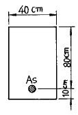
- 27.58 cm2
- 32.45 cm2
- 37.45 cm2
- 42.58 cm2
(정답률: 알수없음)
80. 다음 프리스트레스트 콘크리트(PSC)에 의한 교량 가설법 중에서 교대 후방의 작업장에서 교량 상부구조를 10~30m의 블록(block)으로 제작한 후, 미리 가설된 교각의 교축방향으로 밀어내고 다음 블록을 다시 제작하고 연결하여 연속적으로 밀어 내며 시공하는 공법은?
- 캔틸레버공법(F.C.M.)
- 이동식 지보공공법(M.S.S.)
- 압출공법(I.L.M.)
- 동바리공법(F.S.M.)
(정답률: 알수없음)
5과목: 토질 및 기초
81. 모래치환법에 의한 흙의 현장단위 체적중량 시험에서 모래를 사용하는 목적은 무엇을 알기 위해서인가?
- 시험구멍에서 파낸 흙의 중량
- 시험구멍의 체적
- 시험구멍에서 파낸 흙의 함수상태
- 시험구멍의 밑면의 지지력
(정답률: 19%)
82. 그림과 같이 2m × 2m되는 기초에 2.5t/m2의 등분포하중이 작용한다. 깊이 5m되는 지점에서 이 하중에 의해 일어나는 연직응력(△P)를 2 : 1분포법으로 구한 값은?
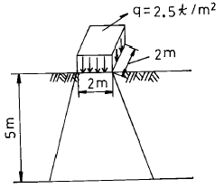
- 0.816t/m2
- 0.178t/m2
- 0.402t/m2
- 0.204t/m2
(정답률: 알수없음)
83. 어느 지반에 30㎝ × 30㎝ 재하판을 이용하여 평판 재하시험을 한 결과 항복하중이 7t, 극한 하중이 15t이었다. 이 지반의 허용 지지력은 다음 중 어느 것인가?
- 25.9t/m2
- 38.9t/m2
- 55.6t/m2
- 83.4t/m2
(정답률: 알수없음)
84. 그림에서 주동토압의 크기를 구한 값은? (단, 흙의 단위중량은 1.8t/m3이고 내부마찰각은 30° 이다.)
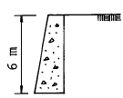
- 3.6t/m2
- 10.8t/m
- 10.8t/m2
- 3.6t/m
(정답률: 알수없음)
85. 어떤 시료에 대하여 일축압축 강도 시험을 실시한 결과 파괴강도가 3t/m2 이었다. 이 흙의 점착력은? (단, φ = 0° 인 점성토이다.)
- 1.0 t·m2
- 1.5 t·m2
- 2.0 t·m2
- 2.5 t·m2
(정답률: 알수없음)
86. 분할법에 의한 사면안정해석시에 제일 먼저 결정되어야 할 사항은?
- 분할세편의 중량
- 활동면상의 마찰력
- 가상활동면
- 각 세편의 공극수압
(정답률: 알수없음)
87. 암석시편을 얻기위하여 시추조사를 실시하여 1.5m를 굴진하였다. 회수된 암석시편의 길이가 0.8m이며 그중 길이 10cm이상되는 시편길이의 합이 0.5m라고 할 때 이 암석시편의 회수율(rock recovery)는?
- 47%
- 53%
- 33%
- 67%
(정답률: 알수없음)
88. C.B.R 시험에 있어서 관입량 2.5㎜ 에 해당하는 표준하중강도는?
- 70 ㎏/㎝2
- 1⑤ ㎏/㎝2
- 132 ㎏/㎝2
- 162 ㎏/㎝2
(정답률: 알수없음)
89. 어떤 점토시료를 일축압축 시험한 결과 수평면과 파괴면이 이루는 각이 48°였다. 점토시료의 내부마찰각은?
- 3°
- 18°
- 30°
- 6°
(정답률: 알수없음)
90. 포화점토의 일축압축 시험 결과 자연상태 점토의 일축압축 강도와 흐트러진 상태의 일축압축 강도가 각각 1.8㎏/㎝2, 0.4㎏/㎝2였다. 이 점토의 예민비는?
- 0.72
- 0.22
- 4.5
- 6.4
(정답률: 알수없음)
91. 말뚝의 지지력에 관한 다음 사항 중 틀린 것은?
- 말뚝 선단부의 지지력과 말뚝 주면 마찰력의 합이 말뚝의 지지력이 된다.
- 말뚝의 지지력을 추정하는데는 재하시험, 동역학적지지력 공식, 정역학적 지지력 공식 등이 있다.
- 동역학적 지지력 공식은 정적인 지지력을 동적인 관입저항에서 구하는 공식이다.
- 무리말뚝은 외말뚝보다 각개의 말뚝이 발휘하는 지지력이 크다.
(정답률: 알수없음)
92. 어느 모래층의 공극율이 40%, 비중이 2.65이다. 이 모래의 한계 동수 경사는?
- 0.62
- 0.75
- 0.99
- 1.62
(정답률: 알수없음)
93. 흙속의 물이 얼어서 빙층(ice lens)이 형성되기 때문에 지표면이 떠오르는 현상은?
- 연화현상
- 다이러턴시(Dilatancy)
- 동상현상
- 분사현상
(정답률: 40%)
94. 흐트러지지 않은 100% 포화된 시료의 체적이 20.5㎝3이고 무게는 33.2g이었다. 이 시료를 노건조 시킨 후 무게는 22.6g이었다. 간극비는?
- 1.07
- 1.52
- 2.14
- 2.63
(정답률: 알수없음)
95. 지표에 하중을 가하면 침하 현상이 일어나고 하중이 제거되면 원상태로 되돌아가는 침하를 무엇이라고 말하는가?
- 소성침하
- 압밀침하
- 압축침하
- 탄성침하
(정답률: 30%)
96. 표준관입시험(S.P.T) 결과 N치가 25이었고, 그때 채취한 교란시료로 입도시험을 한 결과 입자가 둥글고, 입도분포가 불량할때 Dunham공식에 의해서 구한 내부 마찰각은?
- 약 40°
- 약 42°
- 약 32°
- 약 37°
(정답률: 알수없음)
97. 다음 중 직접 기초라고 할수없는 기초는?
- 독립기초
- 복합기초
- 전면기초
- 말뚝기초
(정답률: 알수없음)
98. 모래층에 널 말뚝을 사용하여 물 막이를 한 곳이 있다. 분사 현상이 일어나지 않도록 하기 위하여 취한 조치 중 틀린 것은?
- 널말뚝을 더 깊게 박는다.
- 모래의 포화단위 중량이 작은 것으로 바꾼다.
- 모래를 조밀하게 다진다.
- 상류측과 하류측의 수위차를 줄인다.
(정답률: 알수없음)
99. 지표면에 20t의 집중하중이 작용하는 경우, 깊이 4m 하중 작용 위치에서 2m 떨어진 점의 연직응력을 Boussinesq의 식으로 구한 값은? (단, 영향치는 0.2733임)
- 0.25t/m2
- 0.40t/m2
- 0.56t/m2
- 0.34t/m2
(정답률: 알수없음)
100. 다음 중 흙의 지지력과 직접적인 관계가 없는 시험은?
- 평판재하시험
- C.B.R시험
- 표준관입시험
- 변수위투수시험
(정답률: 알수없음)
6과목: 상하수도공학
101. 혐기성 소화에 의한 슬러지 처리법에서 발생되는 가스 성분 중 가장 많이 차지하는 것은?
- 탄산가스
- 메탄가스
- 유화수소
- 황화수소
(정답률: 알수없음)
102. 용존산소에 대한 설명 중 옳지 않은 것은?
- 오염된 물은 용존산소량이 낮다.
- BOD가 큰 물은 용존산소도 높다.
- 용존산소량이 적은 물은 혐기성 분해가 일어나기 쉽다.
- 용존산소가 극히 적은 물은 어류의 생존에 적합하지 않다.
(정답률: 알수없음)
103. 다음 중 펌프의 양수량을 조절하는 방식이 아닌 것은?
- 펌프의 회전 방향을 변경하는 방법
- 토출밸브의 개폐정도를 변경하는 방법
- 토출구로부터 흡입구로 일부를 돌리는 방법
- 왕복펌프 플렌지의 스트로크를 변경시키는 방법
(정답률: 알수없음)
104. ( )안에 알맞은 것으로 짝지어진 것은?
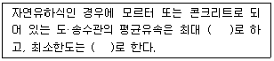
- 3.0m/sec, 0.6m/sec
- 3.0m/sec, 0.3m/sec
- 6.0m/sec, 0.6m/sec
- 6.0m/sec, 0.3m/sec
(정답률: 알수없음)
1⑤. 다음 오염물질과 인체에 관한 영향을 설명한 것 중 옳지 않은 것은?
- 페놀 - 물에 냄새유발
- 인 - 부영양화
- 카드뮴 - 이타이이타이병
- 호스겐 - 간염
(정답률: 알수없음)
106. 다음 중 계획급수 인구를 추정하기 위한 방법이 아닌 것은?
- 타 도시와 비교방법
- 감소율 성장방법
- 로지스틱 곡선법
- 이동평균법
(정답률: 알수없음)
107. 수원을 지하수로 할 때 예상되는 물의 성질로 거리가 먼 것은?
- 철성분이 많이 포함되어 있다.
- 산성도가 높아 침식성이 있다.
- 유기성 물질은 지표수보다 적다.
- 질소산화물은 찾아보기 어렵다.
(정답률: 알수없음)
108. 오수관거 및 합류관거에서 계획우수량에 대한 유속은?
- 최소 0.8m/sec, 최대 3.0m/sec
- 최소 0.6m/sec, 최대 5.0m/sec
- 최소 0.5m/sec, 최대 7.0m/sec
- 최소 0.7m/sec, 최대 8.0m/sec
(정답률: 알수없음)
109. 취수지점에 있는 A 수조에서 B수조와의 사이에 직경 500mm의 주철관이 1000m 부설되어 있다. A수조의 물이 자연 유하로 B수조로 도수될 때 B수조에 유입되는 유량은 얼마인가? (단, 마찰손실만을 고려할때 손실계수 f = 0.01 이다.)
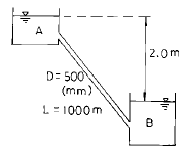
- 0.04m3/sec
- 0.004m3/sec
- 0.27m3/sec
- 0.027m3/sec
(정답률: 알수없음)
110. 도시하수가 하천으로 유입되는 경우에 일어나는 현상으로 틀린 것은?
- BOD의 증가
- SS의 증가
- DO의 증가
- 세균수의 증가
(정답률: 알수없음)
111. 정수처리시 염소살균제의 주입에 관한 다음 설명 중 적합하지 않은 것은?
- 주입량은 처리수량과 주입율로 산출하도록 한다.
- 주입율은 급수전수가 평상시 기준으로 유리잔류염소 1.0ppm 이상 되도록 한다.
- 주입율은 급수전수가 평상시 기준으로 결합잔류염소 1.5ppm 이상 되도록 한다.
- 물의 염소 소비량을 측정하여 주입율 산정에 포함하도록 한다.
(정답률: 알수없음)
112. 다음 중 수중 불순물의 분리조작에서 액체와 고체간의 이동에 따른 상간이동에 의한 분리조작과 거리가 먼 것은?
- 이온교환
- 증발과 증류
- 생물흡착
- 활성탄흡착
(정답률: 알수없음)
113. 암모니아성 질소(NH3-N) 1mg/ℓ 를 질산성 질소(NO3--N)로 산화하는데 필요한 산소량은 얼마인가?
- 1.71mg/ℓ
- 3.42mg/ℓ
- 4.57mg/ℓ
- 5.14mg/ℓ
(정답률: 알수없음)
114. 옥내 배수설비와 관계없는 설비는?
- 트랩
- 유지차단장치
- 위생기구
- 우수배출실
(정답률: 알수없음)
115. 최종침전지에서 슬러지 침강성을 조사한 결과 SS를 2,000mg/ℓ 함유하는 폭기조 혼합액 1ℓ 을 30분간 침전시킨 후 MLSS가 점유하는 부피는 150mℓ 이었다. SVI(슬러지 용적지수)와 SDI(슬러지밀도지수)는 각각 얼마인가? (순서대로 SVI, SDI)
- 150, 1.3
- 75, 1.3
- 150, 0.7
- 75, 0.7
(정답률: 알수없음)
116. 응집처리공정에서 원수의 특성에 알맞게 최적의 응집제 주입량과, 최적의 pH를 주입하기 위해 일반적으로 실시하는 시험은?
- BOD 시험
- COD 시험
- Jar Test
- 탁도 시험
(정답률: 10%)
117. 도수관거로 1,000mm의 원형강관을 사용하고, 동수구배가 1/100일 때의 도수량은? (단, Manning 공식의 조도계수 n=0.01 이다.)
- 3.12m3/sec
- 0.12m3/sec
- 3.97m3/sec
- 0.397m3/sec
(정답률: 알수없음)
118. 합류식과 분류식 하수관거에 관한 설명 중 맞는 것은?
- 분류식은 합류식에 비하여 관거의 부설비가 많이 든다.
- 합류식의 경우 저지대에서 하수를 펌프로 배제할 경우 분류식보다 유리하다.
- 분류식의 경우 강우유량이 많아지면 하천을 오염시킬 우려가 있다.
- 합류식은 관거내 퇴적물을 세척수로 세류시킬 때 분류식보다 유리하다.
(정답률: 알수없음)
119. 하수관거의 부속설비에 대한 설명으로서 옳지 않은 것은?
- 맨홀(Manhole)은 하수관거의 청소, 점검, 보수 등을 위해 사람의 출입과 통풍 및 환기등을 목적으로 설치한 시설이다.
- 우수받이(Street Inlet)는 우수내의 고형 부유물이 하수관거내에 침전하여 일어나는 부작용을 방지하기 위한 시설이다.
- 역사이폰(Inverted Syphon)은 하천, 철도, 지하철 등의 지하매설물을 횡단하기 위해 수두 경사선 이하로 매설된 하수관거 부분이다.
- 토구(Outfall)는 하천 또는 바다물이 하수관거 내로 유입되는 것을 방지하는 시설이다.
(정답률: 알수없음)
120. SVI에 대한 설명으로서 가장 알맞는 것은?
- 활성 침전지 부피 중에 슬러지가 차지하는 부피를 단위 부피당으로 나타낸 값
- 소화조에 주입하는 슬러지의 양
- Imhoff cone 내에서 1kg의 슬러지가 1시간 침전 후 차지하는 부피
- 종말침전지의 부피로 슬러지의 침전특성을 나타내는 지수
(정답률: 알수없음)